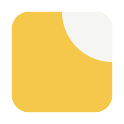
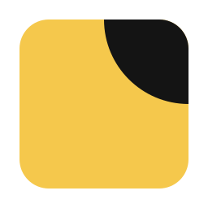
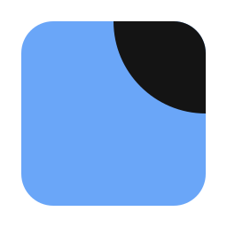
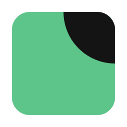
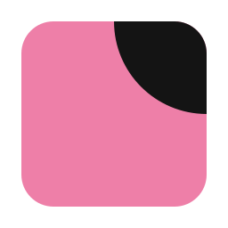
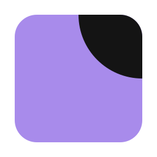
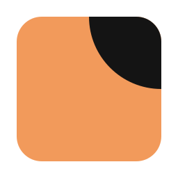
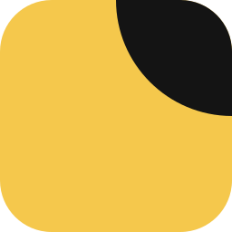
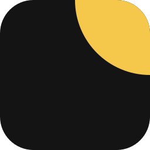

Weave logo · Lifted corner (8a)
A square note with its top-right corner lifted in ink. A sticky note without the folded-corner cliché: the note is picked up, within reach.
Mark

weave-mark-black.svg · one colour

In one colour the corner is separated by a gap, since ink-on-ink would erase it. Construction: 256 grid, note 208 with radius 36; the corner is a quarter circle of radius 104 centred on the note's top-right corner (half the note's width).
Name lockups
weaveweave
weaveGeist 500, lowercase, tracking −3.5 %. The mark is 1.3× the cap height and sits 0.3× its own width from the word. The lockups here are live text; outline them to SVG paths before handing them to print or a store listing.
Colour
Note yellow ·
--n0 #F5C84CInk ·
--primary #141414Paper ·
--ground #F5F5F3Yellow is the brand note. Inside the app the note may take the current list's colour (F7), with the corner always in ink:






App icons and small sizes

app-icon-light.svg
app-icon-dark.svg64
32
16
menu-bar template · 22
The app icon is the note itself, full bleed. The menu bar and tray use the outline template (black on transparent; macOS tints it). The Android adaptive foreground keeps the mark inside the 66 dp safe zone.
Clear space and minimum size
- Clear space on every side: the note's corner radius × 3 (≈ ¼ of the mark).
- Minimum: 16 px for the colour mark, 14 px for the template, 20 px tall for a lockup.
- Below 24 px use the mark alone, never the lockup.
Don't
Files
weave-mark*.svg | Masters: colour, reversed, black, white, and one per list colour (-n0…-n5). |
weave-mark-template.svg | Menu-bar / tray outline. PNGs: png/weaveTemplate.png (16) and @2x (32), plus 18/22/36/44. |
app-icon-*.svg | Full-bleed app icon, light and dark. PNGs 16–1024 in png/. |
app-icon-android-fg.svg | Adaptive-icon foreground (use paper #F5F5F3 or yellow as the background layer). PNG at 432. |
favicon.ico | 16 / 32 / 48. PNGs png/favicon-*.png. |
Status: approved direction, not yet in the app. Adopting it replaces the placeholder mark in docs/design-02/assets/icons.js and is a flagged change to the locked design 02. Trademark clearance not checked; run a search before launch.